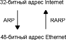

Глава 4 ARP: протокол определения адреса
Проблема, которую мы будем обсуждать в этой главе, заключается в том, что IP адреса имеют какое-либо значение только в семействе протоколов TCP/IP. Канальные уровни, такие как Ethernet или Token ring, имеют собственную схему адресации (в основном 48-битные адреса); сетевые уровни, в свою очередь, используют эти канальные уровни. Сеть Ethernet, может быть использована различными сетевыми уровнями в одно и то же время. Компьютеры использующие разные сетевые протоколы могут находиться на одном и том же физическом кабеле.
Когда фрейм Ethernet отправляется от одного хоста по локальной сети к другому, по его 48-битному Ethernet адресу определяется, к какому интерфейсу он должен быть доставлен. Драйвер сетевой платы никогда не смотрит на IP адрес назначения в IP датаграмме.
Другими словами возникает необходимость установить соответствие между двумя различными формами адресов: 32-битными IP адресами и каким-либо типом адресов канального уровня. RFC 826 [Plummer 1982] - официальная спецификация ARP.
На рисунке 4.1 показаны два протокола, которые мы рассмотрим в этой и следующей главах: протокол определения адреса (ARP - address resolution protocol) и обратный протокол определения адреса (RARP - reverse address resolution protocol).

Рисунок 4.1 Протоколы определения адреса: ARP и RARP.
ARP предоставляет динамическое сопоставление IP адресов и соответствующих аппаратных адресов. Мы используем термин динамическое, так как это происходит автоматически и обычно не зависит от используемых прикладных программ или воли системного администратора.
RARP, в основном, используется системами без жестких дисков (бездисковые рабочие станции или X терминалы), однако здесь требуется ручная конфигурация с участием системного администратора. Мы рассмотрим RARP в главе 5.
Если мы введем команду
% ftp bsdi
будет выполнена следующая последовательность действий. (См. рисунок 4.2.)
- Приложение, FTP клиент, вызывает функцию gethostbyname(3), чтобы конвертировать имя хоста (bsdi) в 32-битный IP адрес. Эта функция в DNS (Domain Name System) называется разборщиком (resolver) , мы опишем это подробно в главе 14. Подобное преобразование осуществляется с использованием DNS или, если существует маленькая сеть, то с помощью статического файла хостов (/etc/hosts).
- FTP клиент требует установить TCP соединение с указанным IP адресом.
- TCP посылает запрос на установление соединения удаленному хосту, посылая IP датаграммы по указанному IP адресу. (Мы рассмотрим как это делается более подробно в главе 18.)
- Если хост назначения подключен к сети (Ethernet, Token ring, или к другому концу канала точка-точка), IP датаграмма может быть послана непосредственно хосту. Если хост назначения находится в удаленной сети, IP маршрутизатор определяет Internet адрес непосредственно подключенного маршрутизатора следующей пересылки, чтобы послать туда IP датаграмму. В обоих случаях IP датаграмма посылается либо хосту, либо маршрутизатору, подключенные непосредственно к данной сети.
- Если используется Ethernet, посылающий хост должен конвертировать 32-битный адрес в 48-битный Ethernet адрес. Или другими словами, осуществить преобразование из логического Internet адреса в соответствующий физический аппаратный адрес. Этим занимается ARP. ARP работает в широковещательных сетях, где много хостов или маршрутизаторов подключено к одной и той же сети.
- ARP посылает фрейм Ethernet, который называется ARP
запрос (ARP request), каждому хосту в сети. Подобный
метод рассылки называется широковещательным
запросом (broadcast). На рисунке 4.2 широковещательный
запрос показан пунктирными линиями. ARP запрос
содержит IP адрес хоста назначения (имя которого
bsdi) и запрос "если Вы владелец этого IP адреса,
пожалуйста сообщите мне Ваш аппаратный адрес".

Рисунок 4.2 Реакция ARP на ввод пользователя: ftp hostname.
Фундаментальная концепция, заложенная в ARP, заключается в следующем. Сетевой интерфейс имеет аппаратный адрес (48-битное значение для Ethernet или Token ring). Фреймы, которыми обмениваются на аппаратном уровне, должны адресоваться к корректному интерфейсу. Однако TCP/IP испоьзует собственную схему адрессации: 32-битные IP адреса. Знание IP адреса хоста не позволяет ядру послать датаграмму этому хосту. Драйвер Ethernet должен знать аппаратный адрес пункта назначения, чтобы послать туда данные. В задачу ARP входит обеспечение динамического соответствия между 32-битными IP адресами и аппаратными адресами, используемыми различными сетевыми технологиями.
Каналы точка-точка не используют ARP. Когда эти каналы конфигурируются (обычно во время загрузки), ядру необходимо сказать IP адрес для каждого конца канала. Аппаратные адреса, такие как Ethernet адреса, в данном случае не используются.
Эффективность функционирования ARP во многом зависит от ARP кэша (ARP cache), который присутствует на каждом хосте. В кэше содержатся Internet адреса и соответствующие им аппаратные адреса. Стандартное время жизни каждой записи в кэше составляет 20 минут с момента создания записи.
Содержимое ARP кэша можно увидеть с использованием команды arp(8). Опция -a показывает все записи, содержащиеся в кэше:
bsdi % arp -a
sun (140.252.13.33) at 8:0:20:3:f6:42
svr4 (140.252.13.34) at 0:0:c0:c2:9b:26
48-битные Ethernet адреса приведены в виде шести шестнадцатиричных чисел, разделенных двоеточиями. Дополнительные функции команды arp обсуждаются в разделе "Команда arp" главы 4.
На рисунке 4.3 показан формат ARP запроса и формат ARP отклика, в случае использования Ethernet и IP адресов. (ARP можно использовать в других сетей, при этом он способен устанавливать соответствие не только для IP адресов. Первые четыре поля, следующие за полем типа фрейма, указывают на типы и размеры заключительных четырех полей.)

Рисунок 4.3 Формат ARP запроса или отклика при работе с Ethernet.
Два первых поля в Ethernet заголовке - поля источника и назначения Ethernet. Специальный адрес назначения Ethernet, состоящий из всех единиц, означает широковещательный адрес. Фреймы с таким адресом будут получены всеми Ethernet интерфейсами на кабеле.
Двухбайтовый тип фрейма (frame type) Ethernet указывает, данные какого типа, пойдут следом. Для ARP запроса или ARP отклика это поле содержит 0x0806.
Выражения аппаратный (hardware) и протокол (protocol) используются для описания полей в пакетах ARP. Например, ARP запрос запрашивает аппаратный адрес (в данном случае Ethernet адрес) соответствующий адресу протокола (в данном случае IP адрес).
Поле hard type указывает на тип аппаратного адреса. Для Ethernet это значение равно единице. Prot type указывает тип адреса протокола, к которому будет приведено соответствие. Для IP адресов используется значение 0x0800. По своему целевому назначению это значение соответствует полю типа во фрейме Ethernet, который содержит IP датаграмму. (См. рисунок 2.1.)
Два следующих однобайтных поля, hard size и prot size, указывают на размеры в байтах аппаратного адреса и адреса протокола. В ARP запросах и откликах они составляют 6 для Ethernet и 4 для IP адреса.
Поле op указывает на тип операции: ARP запрос (значение устанавливается в 1), ARP отклик (2), RARP запрос (3) и RARP отклик (4). (Мы поговорим о RARP в главе 5.) Это поле необходимо, так как поля типа фрейма (frame type) одинаковы для ARP запроса и ARP отклика.
Следующие четыре поля: аппаратный адрес отправителя (Ethernet адрес в данном примере), адрес протокола (IP адрес), аппаратный адрес назначения и адрес протокола назначения. Обратите внимание, что в данном случае происходит некоторое дублирование информации: аппаратный адрес отправителя может быть получен как из Ethernet заголовка, так и из ARP запроса.
Для ARP запроса все поля заполнены, за исключением аппаратного адреса назначения. Когда система получает ARP запрос, который предназначается ей, она вставляет свой аппаратный адрес, меняет местами адреса источника и назначения, устанавливает поле op в значение 2 и отправляет отклик.
В этом разделе мы воспользуемся командой tcpdump, чтобы посмотреть, как в действительности работает ARP при запуске обычного TCP приложения, например, Telnet. В приложении А содержится дополнительная информация о работе программы tcpdump.
Чтобы посмотреть как функционирует ARP, мы запустим команду telnet, чтобы подсоединиться к discard (discard server - сервер, не предоставляющий пользователю никаких услуг) серверу.
bsdi% arp -a
проверяем,
что ARP кэш пуст
bsdi% telnet svr4 discard подсоединяемся к
серверу
Trying 140.252.13.34 ...
Connected to svr4.
Escape character is '^]' .
^]
нажимаем
Control и правую квадратную скобку,
telnet> quit
чтобы
получить приглашение Telnet и закрыть сессию
Connection closed.
Пока осуществляются эти действия, мы запускаем команду tcpdump с опцией -e на другом хосте (sun). Это позволит нам посмотреть аппаратные адреса (48-битные адреса Ethernet).
1 0.0
0:0:c0:6f:2d:40
ff:ff:ff:ff:ff:ff arp 60:
arp
who-has svr4 tell bsdi
2 0.002174 (0.0022) 0:0:c0:c2:9b:26 0:0:c0:6f:2d:40 arp 60:
arp
reply svr4 is-at 0:0:c0:c2:9b:26
3 0.002831 (0.0007) 0:0:c0:6f:2d:40 0:0:c0:c2:9b:26 ip 60:
bsdi.1030>svr4.discard:
S 596459521:596459521 (0)
win
4096 <mss 1024> [tos 0x10]
4 0.007834 (0.0050) 0:0:c0:c2:9b:26 0:0:c0:6f:2d:40 ip 60:
svr4.discard>bsdi.1030:
S 3562228252:3562228252 (0)
ack
596459522 win 4096 <mss 1024>
5 0.009615 (0.0018) 0:0:c0:6f:2d:40 0:0:c0:c2:9b:26 ip 60:
bsdi.1030>svr4.discard:
. ack 1 win 4096 [tos 0x10]
Рисунок 4.4 ARP запрос и ARP отклик, сгенерированные при запросе на Telnet соединение.
На рисунке А.3 в приложении А показан реальный вывод команды tcpdump, которую мы запустили на рисунке 4.4. Так как это первый пример вывода tcpdump в тексте, Вам стоит посмотреть приложение, чтобы увидеть как мы преобразовали вывод, чтобы он стал более красивым и читаемым.
Мы удалили 4 заключительные строки из вывода tcpdump, которые соответствуют разрыву соединения (более подробно рассматривается в главе 18), так как они не имеют отношения к нашему обсуждению.
В строке 1 приводится аппаратный адрес источника (bsdi), в данном случае - 0:0:c0:6f:2d:40. Аппаратный адрес назначения ff:ff:ff:ff:ff:ff, являющийся широковещательным адресом Ethernet. Каждый Ethernet интерфейс на кабеле получит фрейм и обработает его, как показано на рисунке 4.2.
Следующее поле вывода в строке 1, arp, означает, что тип фрейма (frame type) установлен в 0x0806, что означает либо ARP запрос, либо ARP отклик.
Значение 60, напечатанное после слов arp и ip, в каждой из 5 строк означает длину фрейма Ethernet. Так как размер ARP запроса и ARP отклика составляет 42 байта (28 байт - ARP сообщение, 14 байт - Ethernet заголовок), каждый фрейм дополняется до минимума Ethernet: 60 байт.
Если обратиться к рисунку 1.7, то можно увидеть, что минимальный размер (60 байт) включает в себя 14-байтный Ethernet заголовок, однако не включает 4-байтный Ethernet завершитель. В некоторых книгах минимум приводится как 64 байта, что включает в себя и Ethernet завершитель. Мы целенаправленно не включили 14 байт заголовка Ethernet в минимум из 46 байт, показанных на рисунке 1.7. Максимальный размер составляет 1500 байт. Обычно эта величина называется максимальный блок передачи (MTU - maximum transmission unit) (См. рисунок 2.5). Мы часто используем понятие MTU, потому что оно ограничивает размер IP датаграммы, однако оно никак не связано с минимальным размером. Большинство драйверов устройств или интерфейсных плат автоматически дополняют Ethernet фреймы до минимального размера. IP датаграммы в строках 3, 4 и 5 (содержащие TCP сегменты) меньше чем минимум и также будут дополнены до 60 байт.
Следующее поле в строке 1, "arp кто имеет" (arp who-has), идентифицирует фрейм как ARP запрос с IP адресом svr4 в качестве адреса назначения и IP адресом bsdi в качестве адреса отправителя. tcpdump по умолчанию приводит имена хостов соответствующие IP адресам. (В разделе "Беспричинный ARP" мы воспользуемся опцией -n, чтобы посмотреть реальные IP адреса в ARP запросе.)
В строке 2 мы видим, что ARP запрос распространяется как широковещательный, тогда как адрес назначения ARP отклика это адрес bsdi (0:0:c0:6f:2d:40). ARP отклик посылается непосредственно запрашивающему хосту; он не является широковещательным.
tcpdump печатает для этого фрейма arp reply вместе с именем хоста и аппаратным адресом отвечающего.
В строке 3 отправляется первый TCP сегмент, содержащий требование об установлении соединения. Аппаратный адрес назначения это адрес хоста назначения (svr4). Мы рассмотрим этот сегмент более подробно в главе 18.
Число, которое печатается в каждой строке, после номера строки - это время (в секундах) когда пакет был принят программой tcpdump. В каждой строке после первой содержится разница во времени (в секундах) с предыдущей строкой. Это значение приводится в скобках. Как видно из рисунка, время между отправкой ARP запроса и получением ARP отклика составляет 2,2 мс. Первый TCP сегмент послан через 0,7 мс после этого. Таким образом, для динамического определения адреса с использованием ARP, в данном примере, потребовалось менее чем 3 мс.
И последнее на что следует обратить внимание в выводе tcpdump: мы не увидим ARP запрос от svr4, когда он посылает свой первый TCP сегмент (строка 4). Дело в том, что svr4 уже имеет данные о bsdi в своем ARP кэше, так как, когда система получает ARP запрос, помимо того что она посылает ARP отклик, она также сохраняет аппаратный адрес и IP адрес запросившего в своем ARP кэше. Это логично, так как если запросивший собирается послать IP датаграмму, то получившему скорее всего придется отправить ответ на эту датаграмму.
ARP запрос на несуществующий хост
Что произойдет, если запрашиваемый хост выключен или не существует вообще? Попробуем указать несуществующий Internet адрес - идентификатор сети и идентификатор подсети будет от нашего локального Ethernet, однако указанного идентификатора хоста не существует. На рисунке 3.10 мы видели, что идентификаторов хостов с 36-го по 62-ой не существуют (идентификатор хоста 63 - широковещательный адрес). В данном примере мы будем использовать идентификатор хоста 36.
в этот раз telnet на IP адрес, а не на имя хоста (hostname)
bsdi % date ; telnet 140.252.13.36 ; date
Sat Jan 30 06:46:33 MST 1993
Trying 140.252.13.36 ...
telnet: Unable to connect to remote host : Connection timed out
Sat Jan 30 06:47:49 MST 1993
прошло 76
секунд
bsdi % arp -a
проверяем
ARP кэш
? (140.252.13.36) at (incomplete)
На рисунке 4.5 мы видим вывод tcpdump.
1 0.0
arp
who-has 140.252.13.36 tell bsdi
2 5.509069 ( 5.5091) arp who-has 140.252.13.36 tell bsdi
3 29.509745 (24.0007) arp who-has 140.252.13.36 tell bsdi
Рисунок 4.5 ARP запрос на несуществующий хост.
Сейчас мы не указываем опцию -e, так как мы уже знаем, что ARP запрос широковещательный.
Здесь интересно посмотреть, с какой частотой рассылаются ARP запросы: 5,5 секунд после первого запроса и снова через 24 секунды. (Мы рассмотрим тайм-ауты TCP и алгоритм повторных передач более подробно в главе 21.) Полное время, показанное в выводе tcpdump, составляет 29,5 секунды. Однако вывод от команды date перед и после команды telnet показывает, что запрос на соединение от Telnet клиента длился в течении 75 секунд. И действительно, мы увидим позже, что большинство BSD реализаций устанавливают ограничение в 75 секунд для завершения запроса на установление TCP соединения.
В главе 18, при рассмотрении последовательности TCP сегментов, которые посылаются в процессе установления соединения, мы увидим, что моменты отправки ARP запросов полностью совпадают с отправкой сегментов TCP SYN.
Обратите внимание на то, что в кабеле мы никогда не увидим TCP сегменты. Все что мы можем увидеть это ARP запросы. Пока не получен ARP отклик, TCP сегменты не могут быть отправлены, так как неизвестен аппаратный адрес назначения. Если запустить tcpdump
в фильтрующем режиме, чтобы увидеть только данные TCP, вывода не будет вообще.Тайм-аут ARP кэша
Для записей, вводимых в ARP кэш, обычно устанавливается тайм-аут. (В разделе "Команда arp" мы увидим, что команда arp
позволяет системному администратору поместить в кэш определенную запись, и на нее тайм-аут распространяться не будет.) Реализации, произошедшие от Berkeley, обычно установливают тайм-аут, в 20 минут для завершенной записи и 3 минуты для незавершенной записи. (Мы видели незавершенную запись в предыдущем примере, когда заставили отправить ARP запрос на несуществующий хост.) Эти реализации обычно перестартовывают 20-минутный тайм-аут для записи каждый раз, когда эта запись используется.Требования к хостам Host Requirements RFC говорит, что запись должна удаляться по тайм-ауту, даже если данная запись используется, однако большинство реализаций, произошедших от Berkeley, не делают этого - они перестартовывают тайм-аут каждый раз, когда происходит обращение к записи.
Уполномоченный агент ARP
Уполномоченный агент ARP позволяет маршрутизатору отвечать на ARP запросы в одну сеть, в то время как запрашиваемый хост находится в другой сети. С помощью этого средства происходит обман отправителя, который отправил ARP запрос, после чего он думает, что маршрутизатор является хостом назначения, тогда как в действительности хост назначения находится "на другой стороне" маршрутизатора. Маршрутизатор выступает в роли уполномоченного агента хоста назначения, перекладывая пакеты от другого хоста.
Для того чтобы лучше описать работу уполномоченных агентов ARP, мы рассмотрим пример. Из рисунка 3.10 видно, что система sun подключена к двум сетям Ethernet. Однако в действительности это не так, в чем можно убедиться, если сравнить этот рисунок с рисунком, который приведен на внутренней стороне обложки. Между sun и подсетью 140.252.1 находится маршрутизатор, который выступает в роли уполномоченного агента ARP, при этом все выглядело так, как будто sun находится в подсети 140.252.1. На рисунке 4.6 показано, что Telebit NetBlazer, названный netb, находится между подсетью и хостом sun.

Рисунок 4.6 Пример уполномоченного ARP.
Когда какой-либо другой хост в подсети 140.252.1 (скажем, gemini) хочет послать IP датаграмму хосту sun на адрес 140.252.1.29, gemini сравнивает идентификатор сети (140.252) и идентификатор подсети (1), и если они идентичны, отправляет ARP запрос в верхний Ethernet (на рисунке 4.6) на IP адрес 140.252.1.29. Маршрутизатор netb распознает этот IP адрес как принадлежащий одному из dialup хостов и отвечает, отправив аппаратный адрес этого Ethernet интерфейса в кабель 140.252.1. Хост gemini
посылает IP датаграмму в netb по Ethernet, а netb направляет датаграмму в sun по SLIP каналам с дозвоном (dialup). Это делает его прозрачным для всех хостов подсети 140.252.1, так как хост sun действительно находится "позади" маршрутизатора netb.Если мы запустим команду arp на хосте gemini после общения с хостом sun, то увидим, что оба эти адреса принадлежат подсети 140.252.1 (netb и sun) и что им соответствует один аппаратный адрес. Как правило, это основная причина, по которой используется уполномоченный агент ARP.
gemini % arp -a
появится много строк про хосты из подсети 140.252.1
netb (140.252.1.183) at 0:80:ad:3:6a:80
sun (140.252.1.29) at 0:80:ad:3:6a:80
Еще одна деталь на рисунке 4.6, которую необходимо объяснить, это отсутствие IP адреса под квадратиком, который обозначает маршрутизатор netb (SLIP канал). Почему на обоих концах SLIP канала нет IP адреса, как между bsdi и slip? В разделе "Команда ifconfig" главы 3, из вывода команды ifconfig, мы заметили, что адрес назначения SLIP канала 140.252.1.183. NetBlazer не требует наличия IP адресов на каждом конце SLIP канала. (Это позволяет сэкономить несколько столь ценных в настоящее время IP адресов.) Он определяет какой хост посылает пакет в зависимости от того по какому последовательному интерфейсу прибыл пакет, поэтому нет необходимости каждому хосту на SLIP канале использовать уникальный IP адрес для своего канала с маршрутизатором. Все dialup хосты используют адрес 140.252.1.183 в качестве адреса назначения для своих SLIP каналов.
Уполномоченный агент ARP обеспечивает доставку датаграмм к маршрутизатору sun, однако как это делают другие хосты из подсети 140.252.13? Для направления датаграмм в другие хосты должна использоваться маршрутизация. Где-либо в сети 140.252 должны быть сделаны записи в таблице маршрутизации, поэтому все датаграммы, направляющиеся в подсеть 140.252.13 или в указанные хосты этой подсети, будут направляться на маршрутизатор netb. Этот маршрутизатор знает, как доставить датаграммы в их конечный пункт назначения, отправляя их через маршрутизатор sun.
Уполномоченный агент ARP также называется смешанным (promiscuous ARP) или расщепленным (ARP hack). Эти имена появились благодаря другому использованию уполномоченных агентов ARP: они применялись для того, чтобы спрятать друг от друга две физические сети между которыми находился маршрутизатор. В этом случае обе физические сети использовали один и тот же идентификатор сети, так как маршрутизатор, находящийся между ними, был сконфигурирован как уполномоченный ARP агент, чтобы отвечать на ARP запросы из одной сети к хостам в другой сети. Эта техника использовалась в прошлом, чтобы спрятать группу хостов с более старой версией TCP/IP на отдельном физическом кабеле. Две причины, по которым приходилось отделять эти "устаревшие" хосты, заключались в том, что, во-первых, они не могли поддерживать разделение на подсети и, во-вторых, использовали старые широковещательные адреса (идентификатор хоста состоял из всех нулевых бит вместо современного стандарта, при котором идентификатор хоста состоит из единичных битов).
Другая характеристика ARP, которую стоит рассмотреть - "беспричинный" ARP (gratuitous ARP). Он проявляется, когда хост посылает ARP запрос, основываясь на собственном IP адресе. Обычно это делается, когда интерфейс конфигурируется во время загрузки.
Если мы запустим tcpdump на хосте sun при загрузке хоста bsdi, то увидим пакет, показанный на рисунке 4.7.
1 0.0
0:0:c0:6f:2d:40
ff:ff:ff:ff:ff:ff arp 60:
arp
who-has 140.252.13.35 tell 140.252.13.35
Рисунок 4.7 Пример "беспричинного" ARP.
(Мы использовали флаг -n программы tcpdump, чтобы напечатать адреса в цифровом десятичном виде вместо имен хостов.) В терминах полей ARP запроса, адрес протокола отправителя и адрес протокола назначения идентичны: 140.252.13.35 (что соответствует хосту bsdi). Адрес источника в заголовке Ethernet, 0:0:c0:6f:2d:40 как показано программой tcpdump, эквивалентен аппаратному адресу отправителя (из рисунка 4.4).
"Беспричинный" ARP предоставляет две характеристики.
- Он позволяет хосту определить, существует ли другой хост с тем же самым IP адресом. Хост bsdi не ожидает отклика на свой запрос, однако если отклик принят, на консоли возникает сообщение об ошибке "обнаружен дублирующий IP адрес с Ethernet адресом: a:b:c:d:e:f". Это предупреждение системному администратору о том, что одна из систем неправильно сконфигурирована.
- Если хост, посылающий "беспричинный" ARP, только что изменил свой аппаратный адрес (может быть потому, что хост был выключен, удалена интерфейсная плата и затем хост был перезагружен), этот пакет заставляет другой хост на кабеле, который имеет запись в своем кэше для старого аппаратного адреса, обновить ARP кэш соответствующим образом. Малоизвестный факт о протоколе ARP [Plummer 1982] заключается в том, что если хост получает ARP запрос для IP адреса, который он уже имеет в кэше, содержимое кэша обновляется аппаратным адресом отправителя (Ethernet адресом) из запроса ARP. Это делается для любого запроса ARP, полученного хостом. (Повторим, что ARP запросы широковещательные, поэтому такие действия осуществляются всеми хостами в сети каждый раз при появлении ARP запроса.) [Bhide, Elnozahy, and Morgan 1991] описывает приложения, которые используют эту характеристику ARP. Она позволяет запасному (backup) файл-серверу занять место вышедшего из строя сервера с использованием "беспричинного" ARP запроса с запасным аппаратным адресом, однако с тем же IP адресом, который имел вышедший из строя хост. При этом все пакеты, направляемые серверу, вышедшему из строя, будут посланы на запасной сервер, а пользовательские приложения не будут знать о том, что основной сервер вышел из строя.
К сожалению, авторы затем отказались от этого подхода, так как он зависит от корректности реализации ARP на всех типах клиентов. Существуют различные типы ARP, которые не поддерживают эту спецификацию.
Наблюдения за всеми системами в подсети, используемой в этой книге, показывает, что SunOS 4.1.3 и 4.4BSD используют "беспричинный" ARP при загрузке, а SVR4 не поддерживает эту характеристику.
Команда arp
Мы использовали эту команду с флагом -a, чтобы отобразить все записи ARP кэша. Существуют и другие опции.
Суперпользователь может использовать опцию -d, чтобы удалить запись из ARP кэша. (Это было сделано перед запуском некоторых примеров, чтобы показать изменения ARP.)
Записи могут быть добавлены с использованием опции -s. При использовании этой опции необходимо указать имя хоста и Ethernet адрес, IP адрес, соответствующий имени хоста, и Ethernet адрес добавляются в кэш. Подобная запись делается на постоянной основе (она не будет удалена из кэша по тайм-ауту), если только в конце командной строки не будет использовано ключевое слово temp.
Ключевое слово pub
в конце командной строки с опцией -s приведет к тому, что система будет функционировать как ARP агент для этого хоста. Система будет отвечать на ARP запросы для IP адресов, соответствующих имени хоста, при этом ответ будет содержать указанный Ethernet адрес. Если объявленный адрес это адрес самой отвечающей системы, это означает, что система работает как уполномоченный агент ARP для указанного имени хоста.ARP это основной протокол, который используется практически во всех реализациях TCP/IP. Обычно его функционирование не зависит от используемых приложений или воли системного администратора. ARP кэш является фундаментом этой работы. Мы использовали команду arp, чтобы просмотреть или модифицировать кэш. Каждая запись в кэше имеет таймер, который используется для удаления незавершенных или завершенных записей. Команда arp отображает модифицированные записи в ARP кэше.
Мы посмотрели обычное функционирование ARP и специализированные версии: уполномоченный агент ARP (когда маршрутизатор отвечает на ARP запросы для хостов, находящихся на другом интерфейсе маршрутизатора) и "беспричинный" ARP (посылающий ARP запросы для своего собственного IP адреса, обычно во время загрузки).
Упражнения
чтобы проверить, что ARP кэш также пуст на хосте назначения? (Эта команда исполнит команду arp -a на хосте svr4.)